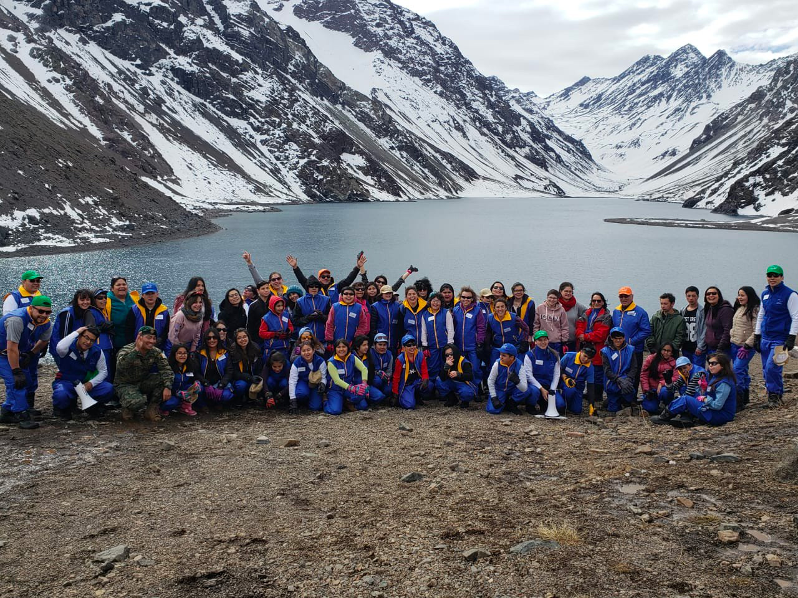

La Fundación Niño y Cáncer quiere agradecer la importante ayuda recibida que ha permitido realizar con un gran éxito el Taller de Ski, como parte del Programa Montaña de la alegría 2018. En esta oportunidad 3 niños Ecuatorianos, una niña Boliviana y 3 chilenos han podido disfrutar de su estadía en la Escuela de Montaña del Ejercito de Chile del 20 al 24 de Agosto 2018 aprendiendo a esquiar en Portillo. Uno de nuestros beneficiarios presentó una pérdida de fuerzas de su extremidad inferior asociada a su enfermedad, por lo que fue atendido en S. Urgencia en Santiago y enviado a Ecuador el 22.08.18. Allá continuó su tratamiento y ha manifestad su alegría de poder haber disfrutado de este Taller, conocer la nieve, subirse a los esquíes, compartir con amigos incluso de otros países. Todos los participantes aprendieron a esquiar gracias al incansable trabajo de los instructores y al esfuerzo personal que cada uno de nuestros pacientes. El grupo fue recibido en Hotel Radisson el día Vienes 24 Agosto 2018 donde se hizo una convivencia, se entregaron medallas recordatorias y se escuchó los comentarios y vivencias muy favorable y muy emotivas sobre su experiencia en esta actividad. También escuchamos los comentarios de los instructor y gerente de hotel. Indudablemente este Taller es fruto de un trabajo grande en equipo donde quisiéramos destacar la participación de Patricio Morandé como Jefe del Programa de los Instructores, de los niños amputados, de la sonrisóloga, del Ejercito de Chile, de los Buses Cabrera, del papa de Jorge Andrés que nos puso el Audio, de los voluntarios FnyC, de Gustavo Dávila presidente de Fundación Jóvenes contra el Cáncer de Ecuador que consiguió los pasajes para el viaje, del Hotel Radisson, Hotel Portillo y a los socios de FnyC que en conjunto han permitido que este Taller 2018 haya sido exitoso. Esperamos seguir contando con la ayuda de Uds. y sus instituciones en los próximos años para que nuevos niños aprendan a esquiar y otros perfecciones lo ya aprendido. Ojalá tengamos otros que sigan el camino de Julio y participen como él en Campeonatos Olímpicos llevando en alto el sello de este taller. En nombre del Consejo, Directorio, Comité Ejecutivo Voluntariado queremos decirle simplemente Muchas gracias!!!
Al ritmo de la salsa y el reggaetón se dio término al IX Congreso Latinoamericano de Cuidados Paliativos de la Asociación Latinoamericana de Cuidados Paliativos (ALCP), el que se realizó, entre el 11 y el 14 de abril, en el Centro de Convenciones del Hotel Marriott de Santiago
Ver+